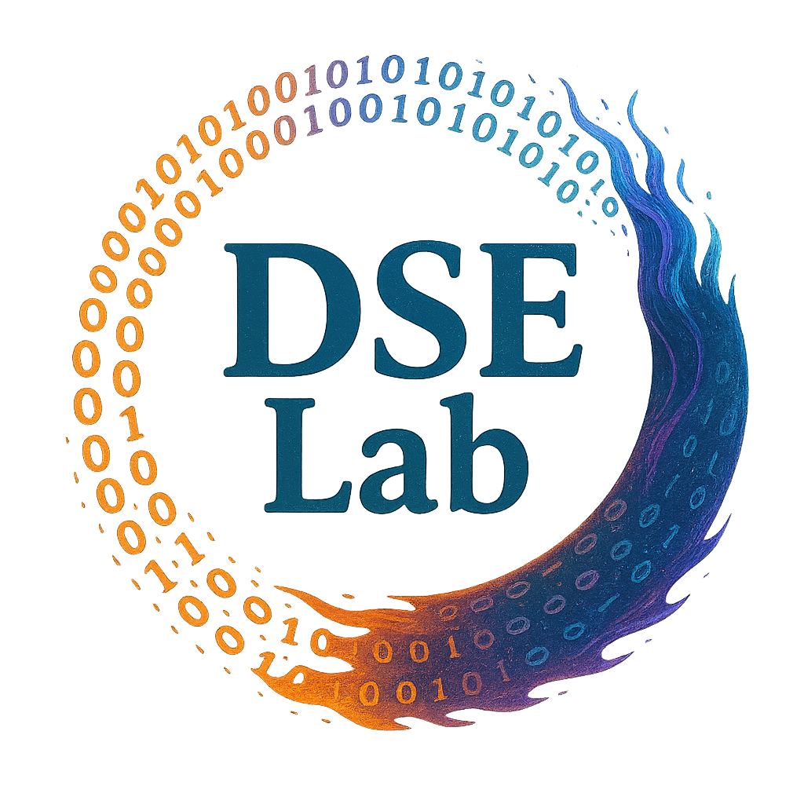

AI-Driven Econometrics
計量経済学と人工知能を接続し、予測・因果推論・意思決定支援を統合した新しい分析枠組みを探究する。

本研究室は、データサイエンス、機械学習、計量経済学を基盤として、 社会科学と自然科学の双方に応用可能な理論と実証研究を推進する。 AI と統計の融合により、現実の複雑な問題に対する分析、予測、意思決定支援を目指す。
数理的基盤に支えられた分析と AI による知的処理を統合し、 経済・産業・社会に資する高水準の研究と教育を展開する。
計量経済学と人工知能を接続し、予測・因果推論・意思決定支援を統合した新しい分析枠組みを探究する。
高次元データ、非線形性、不規則な観測構造に対応するための学習理論と統計的推測手法を開発する。
分散環境における協調学習を通じて、プライバシー保護と高精度分析の両立を目指す。
金融、産業、医療、社会システムなどに対し、データ駆動型の機械学習モデルを適用する。
MyJP-SIM² 2026 International Symposium
学際共創計量経済学・データサイエンスセミナーとして、 研究交流と国際発信を継続的に推進する。 Seminar Page
Statistical Network Analysis and Beyond に関連する国際研究会の企画・運営に参画する。 Official Website
Outstanding Contribution Award